Parties work; six rough edges fixed
Two screens stayed within 0.04 s of each other, every step below worked in a real browser, and production logged no party errors in the last 14 days. Six small things were wrong, and all six are fixed:
- A tap on the phone paused everyone. Now it only brings up the controls.
- Back to picking was one tap with no undo. Now it asks while someone else is watching.
- One sentence named the wrong film. Now it reads “Ben said no to switching to …”.
- Joining a friend’s film didn’t ask him. Now he gets Let in or Not now.
- “Watch with Ben” chimed on his phone at once. Now the invite waits 4 s behind Undo.
- On a sideways phone the panel hid the middle of the film. Now it keeps to the edge, narrower.
Playback fixes: tap, stop, wording
1. A tap on the phone paused the film for everyone
Tapping the middle of the picture to bring up the controls also paused the film, and the other person saw “Ben paused”. It happened 2 times out of 2.
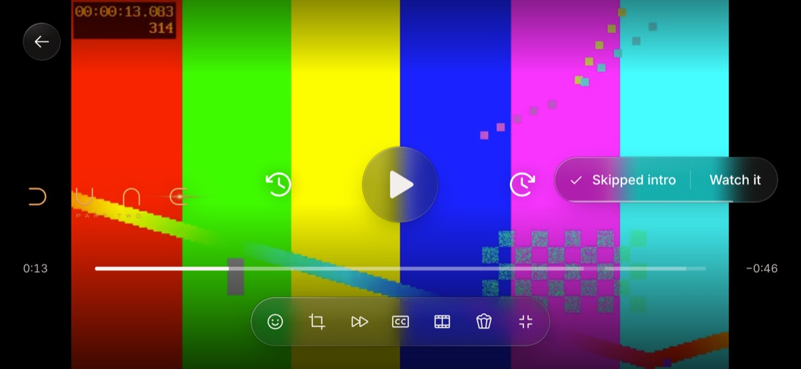
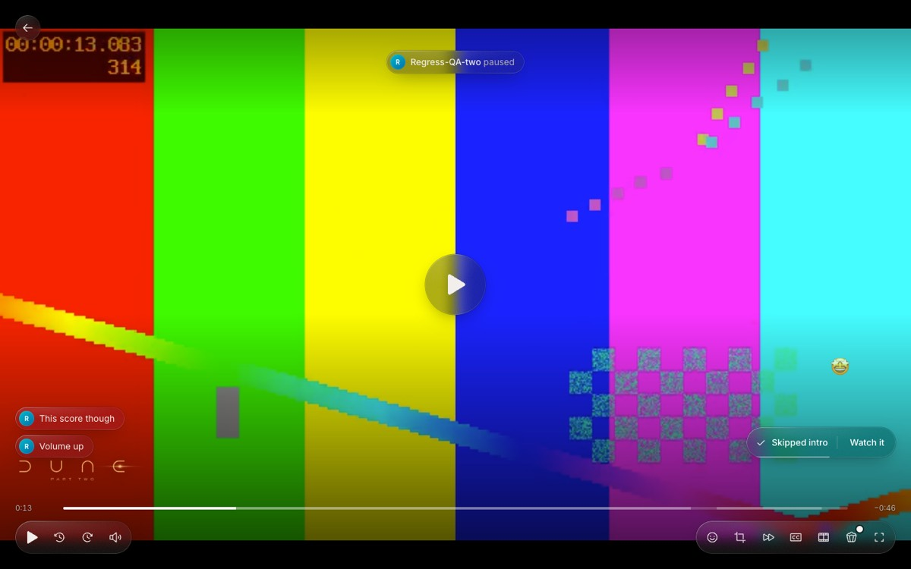
The tap brought up the controls as the finger lifted, and the browser then turned that same tap into a click on the pause button that had just appeared.
Fixed: the picture now cancels the click a tap leaves behind (touch.ts). The phone touch test now taps the middle too; that check failed before the fix and passes after it.
2. Back to picking asks first
It used to stop the film on every screen in one tap and drop your friend on Home. Now you get a question first while anyone else is watching; alone, it still goes straight back.
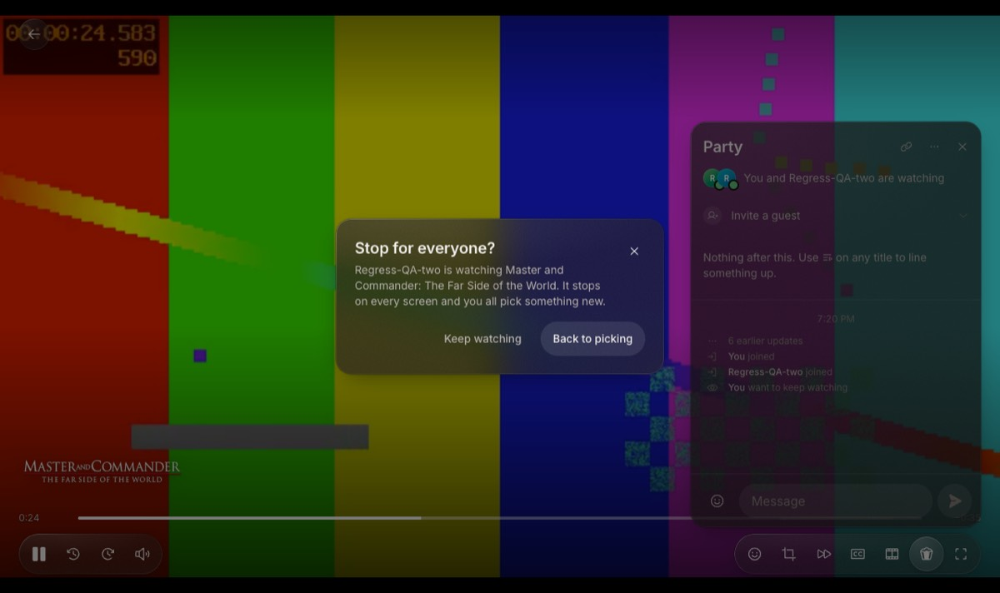
This asks you, not Ben. It catches the accidental tap without making him answer a prompt mid-film.
3. The “no” to a switch names the right film
After Ben turned down a switch, you read “Ben wants to keep watching” above the film he had just refused. It now reads “Ben said no to switching to” above that film.

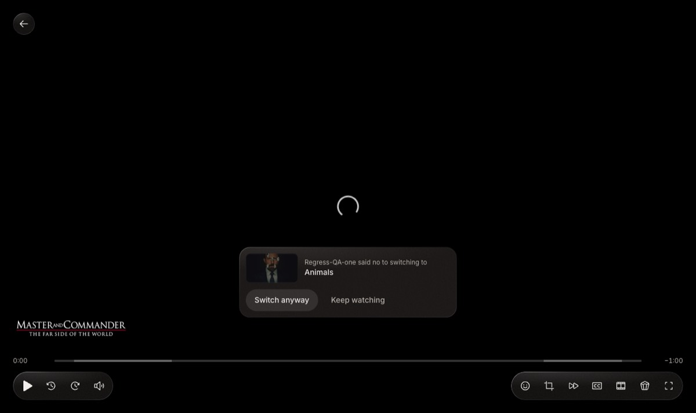
Joining and phone fixes
4. Joining someone watching alone asks first
Before, one tap dropped you into Ben’s film and he only saw “Ana joined”. Now the button says “Ask to join”, and Ben gets Let in or Not now over his film; a party he started is still open to join directly.
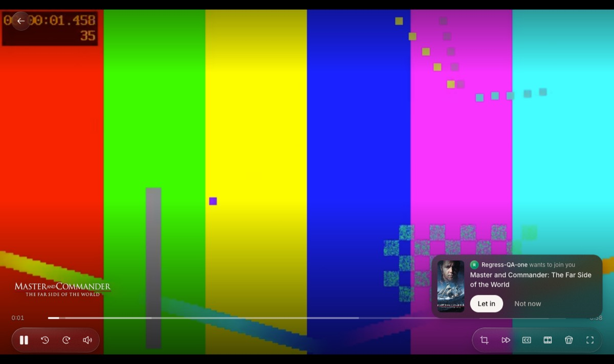
5. “Watch with Ben” waits 4 seconds for Undo
The party starts at once and the panel opens, but the invite goes out only after 4 s. Undo in that time and he never hears of it.
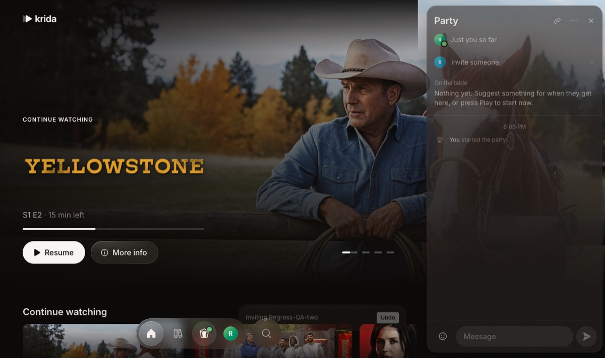
6. The sideways panel keeps the middle of the film clear
On a phone held sideways the panel now sits at the right edge and is 300 px wide, down from 372 over the middle. It covers about a third of the picture instead of half, and none of its middle.
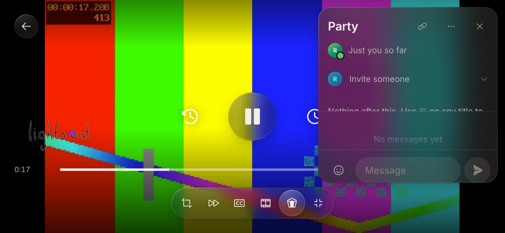
How joining works now
The popcorn button (the dock on a laptop, the Party tab on a phone) changes with who’s on. One tap does this:
| It says | One tap |
|---|---|
| Watch with Ben | Starts an empty party and opens the panel; the invite goes out after 4 s unless you Undo. With more than one other profile, a sheet asks who. |
| Ben is watching Dune. Ask to join | He’s watching alone: asks him. Let in takes you into his film; Not now or no answer in 10 minutes says so. Private mode hides this. |
| Ben is in a party. Join | A party is meant to be joined: you’re in at once. |
| Party | You’re in one: it opens or closes the panel. |
Other ways in: Join on an invite, a copied party link, or Watch together on a title page. If the party is still picking, the panel opens where you are; if it’s watching, you go straight into the player.
How a party goes
Desktop is Ana, the phone is Ben. The film is a test video standing in for Dune.
Start: one press, no title needed
The popcorn in the dock says “Watch with Ben”. One press starts the party, and the invite follows 4 s later.
On his phone a toast arrives with a soft chime and stays until he answers. The Party tab reads Join.
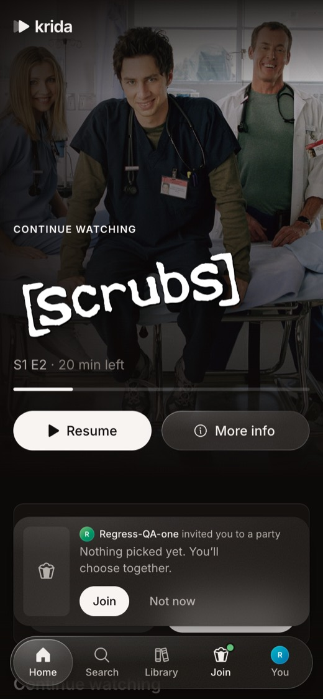
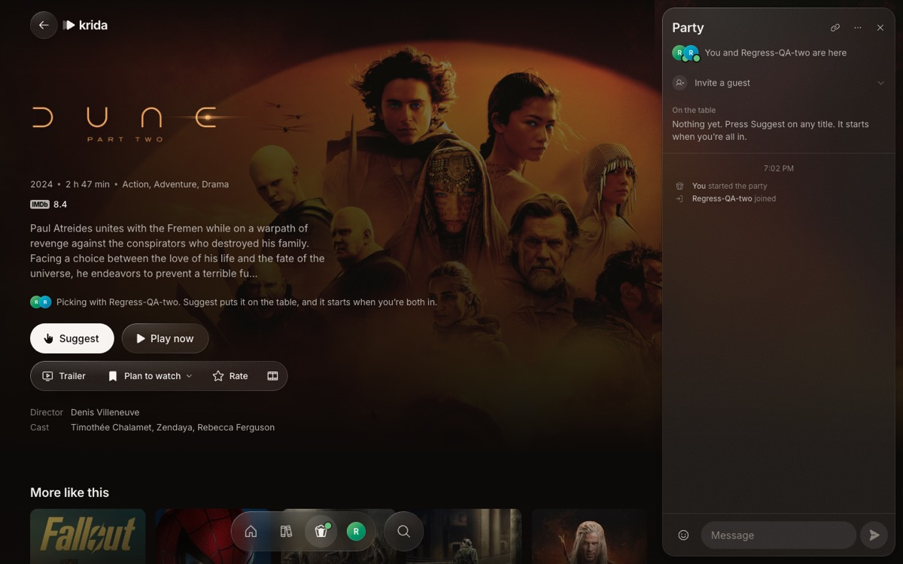
Pick together: suggest, then both say “I’m in”
You pick by browsing the app as usual, and a line on each title page explains the rule in place. Suggesting puts the title “on the table” in both panels.
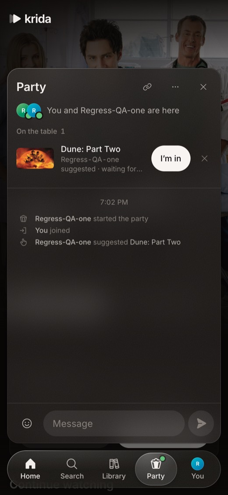
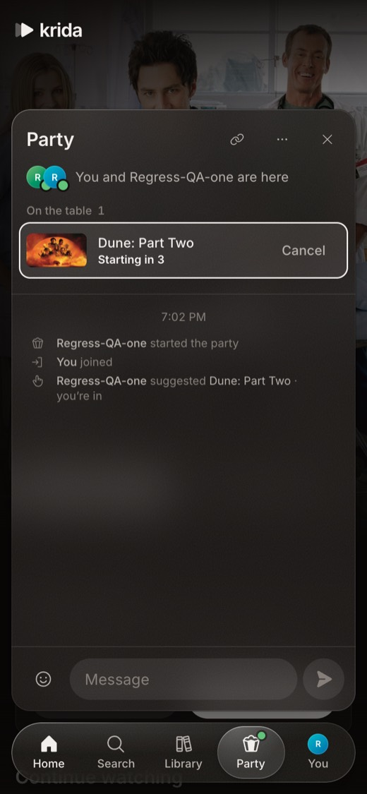
Watch: who did what is always named
Every play, pause or skip shows a pill at the top naming who did it. Chat shows over the picture at the bottom left, and reactions rise on the right with a sound.

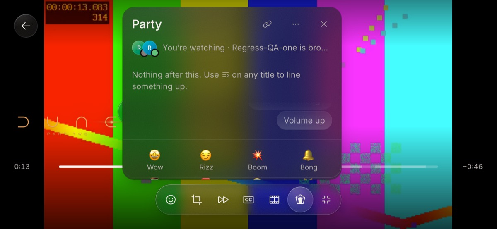
A slow connection: both pictures wait
If one of you stalls, both pictures stop and a pill says who you’re waiting for. After 20 s at most, the party carries on without them, so one bad connection can’t freeze the night.

Changing the film asks first
Pressing Play on another title mid-film asks the other person. A thin bar drains across Switch now over 30 s.

Step out and come back
Back takes you browsing while the other person keeps watching. The panel shows what’s on with a play button back in, and the friend’s panel says you’re browsing.
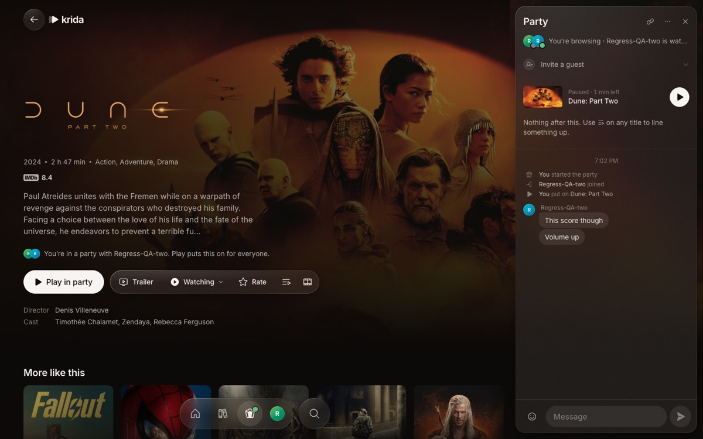
The look fits the brief
- Calm and cinematic. The artwork carries the colour; glass only floats (panel, pills, capsules), never stacked.
- The conversation reads first. Events are small grey lines, chat is bubbles, and the time sits between them once.
- Sound is saved for rare moments: the invite chime and reactions.
- Copy explains the rule where you need it: “Suggest puts it on the table, and it starts when you’re both in.”
Fine as designed
- Anyone can pause, seek or pick; there’s no host in charge of the remote.
- A party always plays at 1×; hold-for-2× works only alone.
- Closing the tab leaves you “away”, and you’re counted out after 10 minutes. A party with nobody watching ends after 30.
- Auto-skip of intros happens only if both of you have it on.
How this was checked
On main at 0f76956, 27 Oct 2026, on the QA app: two profiles, a laptop-sized browser and a phone-sized one with touch, and a one-minute test video. The technical guide has the internals.
Ran: the flow on laptop and phone, all checks passed
Invite, join, suggest, “I’m in”, countdown, both playing, chat and reactions both ways, the party menu, and stepping out with the way back. The sync test passed 14 of 14 checks, including the wait for a slow connection.
Ran: the phone tap, 2 of 2 paused the party before the fix
Controls hidden, one tap at the centre of a sideways phone: once at 0:13, right after the intro skip, and once at 0:26 with nothing on screen. Both times the video paused and the controls appeared.
Ran after all six fixes: join 13 of 13, touch 59 of 59, sync 18 of 18, unit tests 605 of 605, regress 40 of 40
The new join test covers Undo (B hears nothing), the invite 4 s later, a knock turned down, and a knock let in that lands A in B’s film 0.02 s apart. The phone touch test now also taps the middle (that check failed before fix 1) and checks the sideways panel leaves the middle clear. The sync test checks the “said no to switching to” line and Back to picking’s question. Unit tests cover knocks: let in, no, take-back, a room that ended, replacing, and running out. Typecheck, lint and the import rules pass, and the regression gate found all 40 screens unchanged.
The join test caught a real bug on the way: Undo could leave every later “Inviting” toast paused, so the next invite never went out. The invite now runs on its own 4-second timer.
One problem was already on main before these changes: run the sync test straight after the phone touch test, and the party’s film never starts. A fresh QA app passes. It reproduces on unchanged main too; not fixed here.
Read: 14 days of production failure logs, nothing from parties
Most lines are slow catalog lookups. One error unrelated to parties appeared twice on 25 Oct on the watch page: “devicePixelRatio is not defined”, from the picture-fit code in touch.ts.
Not checked: real phones, real streams, the apps
The tap issue was seen in Chrome’s phone mode, not on an iPhone or Android phone. Real TorBox files, Krida for Windows and the Android app in a party weren’t run here.